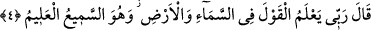
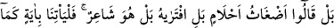
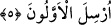

boyama olduğuna inandıkları için söylediler.
İmam (Râzî) şöyle demiştir: “İnkârcılar, Peygamberimizin beşer olması sebebiyle
peygamberliğine dil uzattılar ve getirdiğine sihir dediler. Oysa bu geçersizdir. Çünkü
nübüvvetin sıhhati, görünüş ile değil mûcize ile bilinir. Eğer onlara bir melek
peygamber gönderilseydi, onun peygamberliğini sûretinden bilemezlerdi. Ancak
getirdiği mûcizelerle tanırlardı. Mûcize bir beşerin elinde sâdır olduğu zaman onun
kabûlü vâcibdir/zorunludur.
Sûretten geç, manâya yönel!
Çünkü suretler yaprak oldu, mânâ ise koku
İnkârcılar bu sözleri, kendi aralarında istişâre etmek üzere söyledikleri, peygamberlik
dâvâsını akamete uğratmak ve dini yok etmek arzusuyla gizlice konuştular. İstişârede
bulunan kimselerin âdeti, sırlarını düşmanlarından mümkün olduğunca saklamaktır.
Nitekim Muâz (r.a.)’ın merfû olarak Rasûlullah (s.a.)’den naklettiği şu hadîs, bu
kabildendir: “İhtiyaçlarınızın, isteklerinizin yerine gelmesi husûsunda onları gizli
tutmaya bakın. Çünkü her nimet sahibi kıskanılır.”[139]
4. (Peygamber) dedi ki: “Rabbim, yerde ve gökte (söylenmiş) her sözü bilir. O,
hakkıyla işiten ve bilendir.”
İnkârcıların aralarında gizlice söyleştikleri sözler ve İslâm’ın nûrunu söndürmek için
giriştikleri davranışlar kendisine vahiyle bildirildikten sonra Rasûlullah (s.a.), onların
yaptıklarını açıklamak üzere “dedi ki:” Gizli de olsa, açık da olsa “Rabbim, yerde ve
gökte” söylenmiş “her sözü bilir.” Hiçbir söz O’nun bilgisinden gizli değildir. Onların
söylediklerini bilmesi çok daha kolaydır. O, sözleri bildiğine göre elbette fiilleri de
bilir. Çünkü “O, hakkıyla işiten ve bilendir.” İşitilen ve bilinen şeyleri ziyâdesiyle
bilir. Onların gizlice yaptıkları fısıltılar da bu cümleye dâhildir. Allah onlara sözlerinin
ve yaptıklarının karşılığını verecektir.
5. Onlar: “Hayır, (bunlar) saçma sapan rüyalardır; bilakis onu kendisi
uydurmuştur; belki de o, şairdir. (Eğer öyle değilse) bize hemen, öncekilere
gönderilenin benzeri bir âyet getirsin.” dediler.
“Onlar: “Hayır,” bunlar “saçma sapan rüyalardır;”